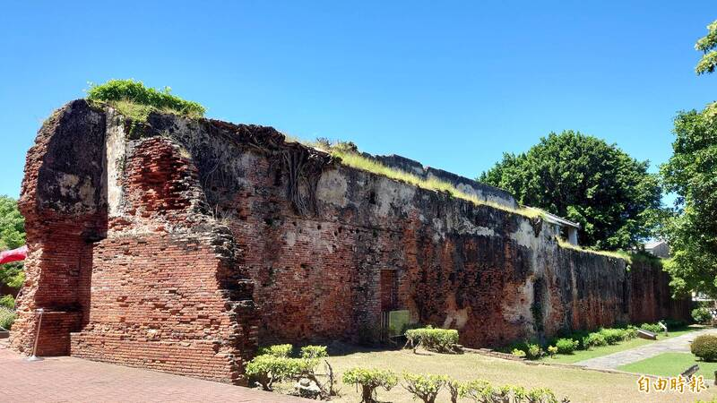
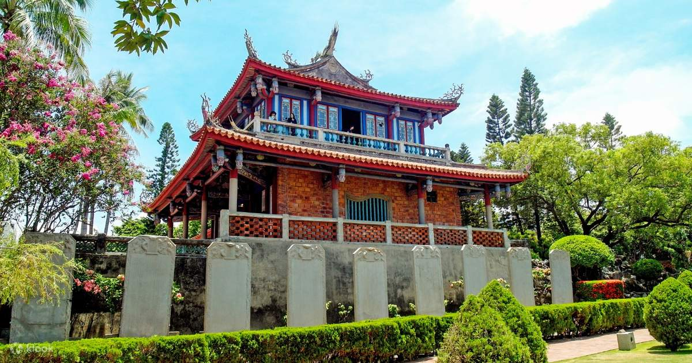

Colorful history to make diverse cultures
When it comes to Taiwan, we need to start from its history Taiwan, located in the western Pacific Ocean, has had a strong strategic position since the 1600s. In 1624, Dutch occupied the south of Taiwan for 38 years until the general Zheng took over Tainan in 1662. Taiwan has been under Chinese sovereignty for more than 200 years since General Zheng's occupation, and a huge number of Chinese have relocated from China to Taiwan during that time. They contributed significantly to Taiwan's early population. The Qing dynasty, the government that ruled Taiwan at the time, was defeated by Japan in 1894. As a result, Japan colonized Taiwan for 50 years till the end of World War II. Following that, Taiwan was returned to the Republic of China. However, the government of the Republic of China was defeated in the Chinese civil war, and the Chinese rule was taken over by Mao Zedong, the leader of the Chinese Communist Party. As a result, the government of the Republic of China relocated to Taiwan, and a large number of Chinese citizens came to Taiwan at the time, resulting in another significant increase in Taiwanese population. Furthermore, the political situation in Taiwan is remains complicated as a result of the civil war and the United States' subsequent policy of deliberate ambiguity. The conflict between the Community Party of China and the Republic of China (Taiwan) government remains unresolved.
With the prospect of returning to mainland China and regaining power dwindling, the government of the Republic of China began to focus its attention on this small island. Therefore, Taiwan's economic growth has accelerated. Taiwan also became a democratic country during this time period. Since 1990s, another group of people start to move into Taiwan, due to labor shortage, Taiwan started to welcome people from Southeast Asia to work in Taiwan since 1990s. More and more Vietnamese, Filipinos, Thai, and Indonesian came to Taiwan in these recent two decades. They brought their cultures, especially cuisines to Taiwan and made Taiwan became more and more diverse.
Although the majority of Taiwan's population is Chinese, due to its openness and unique geographical location, Taiwan has evolved into a vibrant and culturally rich country after 400 years. From above history, we already known Taiwan is a country with diverse cultures. Besides, I will share the islandness of Taiwan from different perspectives.
Dutch cultures
The Dutch had a significant influence on Taiwan during their colonial rule from 1624 to 1662. Their impact on the island's culture, language, and architecture can still be seen today. One of the most significant contributions the Dutch made to Taiwan was in the area of agriculture. They introduced new crops such as sugar cane, which became a major export for Taiwan. The Dutch also brought with them new farming techniques, which helped to increase crop yields and improve the island's agricultural production. The Dutch also left a lasting impact on Taiwan's architecture. They built forts, churches, and government buildings in a distinctive European style that blended Dutch and local influences. Some of these structures, such as Fort Zeelandia in Tainan, still stand today and are popular tourist attractions. Tainan, the city in the south of Taiwan, was a stronghold during the Dutch colonial period. Therefore, most of Taiwanese viewed Tainan as the beginning of Taiwanese history and the oldest city in Taiwan. Because of this reason, I chose to study in Tainan for my bachelor’s degree.
Image: Fort Zeelandia and Chikan Tower (Fort Provintia)
 Chinese cultures and Religions
Fujian and Hakka immigrants began arriving in Taiwan in the 17th century, shaping the island's history and cultural landscape. My ancestors immigrated from China at this time, and thus I would say my blood is Fujian culture. One of the most significant contributions of Fujian culture to Taiwan is in the area of food. Taiwanese cuisine has been heavily influenced by Fujian cuisine, with dishes like braised pork rice and oyster omelet being popular examples. The use of ingredients like soy sauce, rice wine, and fermented tofu in Taiwanese cooking also has its roots in Fujian cuisine. Those food are easy to be found in night market. The Hakka people, known for their industriousness and resilience, have also made significant contributions to Taiwanese cultures. Hakka architecture is also a prominent feature of Taiwan's cultural landscape. Hakka houses, which are typically round or rectangular in shape, are designed to be both functional and defensive. These houses are built using rammed earth and have thick walls to protect against invaders and natural disasters. Many Hakka houses still stand today and have become popular tourist attractions.
In addition to food and architecture, the Fujian and Hakka cultures have also brought their religion when immigrated to Taiwan. One of the most significant Chinese religions brought to Taiwan was Buddhism. Chinese Buddhist monks and nuns arrived in Taiwan to spread their teachings and establish monasteries. These monks and nuns played a significant role in shaping Taiwanese Buddhism, adapting it to the local culture and customs. Taoism, another Chinese religion, was also introduced to Taiwan through migration and cultural exchange. Taiwanese Taoism, also known as "folk Taoism," incorporates indigenous beliefs and practices into its teachings and rituals, creating a unique blend of Taoism and local traditions.
Temples are the most distinguished things to explain Taiwan religious cultures. There are more than 15,000 official temples in Taiwan. Temples are not only a place to worship gods and goddesses but also a community center to interact with others. Once in a while, there will be temple fairs for celebration of gods’ or goddesses’ birthday. At this moment, you will see a bunch of people walking on the street, playing Chinese instruments, and dressed in puppets of gods. All kinds of decorated trucks follow this parade, and sometimes there will be hot girls dancing and singing on the trucks to invigorate the party. Temple fairs are full of colorful and interesting things to explore.
Japanese cultures
There is a significant presence of Japanese culture in Taiwan, largely due to Japan's colonization of the island from 1895 to 1945. During this period, Japan introduced its language, education system, infrastructure, and cultural practices to Taiwan. One of the most noticeable aspects of Japanese culture in Taiwan is its architecture. Many buildings in Taiwan were built during the Japanese colonial period and reflect the Japanese influence in their design. One of the notable examples is our presidential palace. Also, most of modern sugar factories in Taiwan were built by Japanese. Therefore, it is easy to find some Japanese style dormitories while walking in sugar factories. The other aspect of Japanese culture in Taiwan is its food. Many Japanese dishes have become popular in Taiwan, such as sushi, ramen, and tempura. There are also many Japanese restaurants in Taiwan, including high-end sushi restaurants and casual ramen shops.
Mountains and Ocean
Besides diverse culture, the landscapes of Taiwan is breathtaking. Over 70 percentage of landscapes in Taiwan are mountains. Therefore, I would say Taiwanese has strong relationships to mountains. Since I was a high school student, my parents took me to Forest Recreation Area or National Park every weekend. This made me enjoy the lifestyles to immerse into nature. The feeling to be with mother nature is hard to describe, I just shared my pictures to show my enjoyment in mountains.
Ocean is another connection for a person from islands. One of my favorite things is to watch sunset at beach. When I was studying in Tainan, the place where I live is really close to the beach. Therefore, I usually went to watch sunset from time to time. Listening to the sound of waves also made me peaceful, and this is why I like to see on the beach alone. I always feel I am recharged after watching sunset and I can have more energy to keep fighting with my exams after supper.
Democracy
I will say democracy play a critical role in Taiwanese islandness. The first steps towards democracy in Taiwan came in the 1980s when the government began to relax its authoritarian grip on society. In 1987, martial law was lifted, and the government allowed opposition parties to form. The Democratic Progressive Party (DPP) was founded in 1986 and quickly became the leading opposition party. In 1996, Lee Teng-hui was elected from the first direct presidential election. After that, Taiwan has a presidential election every four years, and has experienced several political party rotations in the past two decades. From now on, Taiwan a mature democratic country in the world.
The reason why I will say democracy play a critical role in Taiwanese islandness is it strengthens the identity of Taiwanese. Because of complicated situation and history, Taiwan has a strong relationship with China. However, because of democracy, Taiwan is different from China. The people living in Taiwan have the right to create, to speak, and to decide their own future. Because of democracy, Taiwan becomes the most free and open region in the Chinese society, and because of democracy, Taiwanese has stronger identity of the island where they live and are proud to be Taiwanese.
Islandness of Taiwan
For me, the islandness of Taiwan is simple. Diverse cultures, delicious and various food, mountains, ocean and democracy.